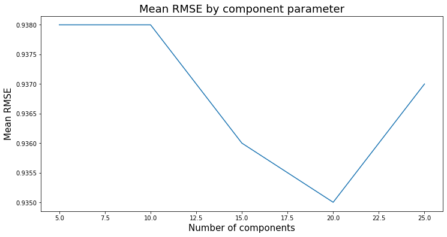

Modeling
Contents
Modeling#
import os
import numpy as np
import pandas as pd
import matplotlib.pyplot as plt
from sklearn.decomposition import TruncatedSVD
from sklearn.model_selection import train_test_split
import seaborn as sns
import surprise
from surprise import SVD, Dataset, Reader, accuracy
from surprise.model_selection import cross_validate
pd.set_option('display.max_columns', 500)
pd.set_option('display.width', 2000)
# data
cols = ["user_id", "movie_id", "rating", "timestamp"]
ratings = pd.read_csv(
os.path.join("../data", "ml-100k", "u.data"),
sep="\t",
names=cols,
encoding="latin-1",
)
ratings
ratings = ratings.drop(columns=["timestamp"])
ratings.head()
# Movies data
cols = [
"movie_id",
"movie_title",
"release_date",
"video_release_date",
"IMDb_URL",
"unknown",
"Action",
"Adventure",
"Animation",
"Children",
"Comedy",
"Crime",
"Documentary",
"Drama",
"Fantasy",
"Film-Noir",
"Horror",
"Musical",
"Mystery",
"Romance",
"Sci-Fi",
"Thriller",
"War",
"Western",
]
movies_data = pd.read_csv(
os.path.join("../data", "ml-100k", "u.item"),
sep="|",
names=cols,
encoding="latin-1",
)
movie_titles = movies_data[['movie_id', 'movie_title']]
# Description of the data
user_key = "user_id"
item_key = "movie_id"
N = len(np.unique(ratings[user_key]))
M = len(np.unique(ratings[item_key]))
X = ratings.copy()
y = ratings["user_id"]
X_train, X_valid, y_train, y_valid = train_test_split(
X, y, test_size=0.2, random_state=42
)
## Mapper to train Map ratings
user_mapper = dict(zip(np.unique(ratings[user_key]), list(range(N))))
item_mapper = dict(zip(np.unique(ratings[item_key]), list(range(M))))
user_inverse_mapper = dict(zip(list(range(N)), np.unique(ratings[user_key])))
item_inverse_mapper = dict(zip(list(range(M)), np.unique(ratings[item_key])))
train_mat = None
valid_mat = None
def create_Y_from_ratings(data, N, M):
'''
Create ranking matrix
'''
Y = np.zeros((N, M))
Y.fill(np.nan)
for index, val in data.iterrows():
n = user_mapper[val[user_key]]
m = item_mapper[val[item_key]]
Y[n, m] = val["rating"]
return Y
train_mat = create_Y_from_ratings(X_train, N, M)
valid_mat = create_Y_from_ratings(X_valid, N, M)
print("train_mat shape: ", train_mat.shape)
print("valid_mat shape: ", valid_mat.shape)
train_mat shape: (943, 1682)
valid_mat shape: (943, 1682)
train_mat
array([[nan, 3., 4., ..., nan, nan, nan],
[ 4., nan, nan, ..., nan, nan, nan],
[nan, nan, nan, ..., nan, nan, nan],
...,
[ 5., nan, nan, ..., nan, nan, nan],
[nan, nan, nan, ..., nan, nan, nan],
[nan, 5., nan, ..., nan, nan, nan]])
print("Number of non-nan elements in train_mat: ", np.sum(~np.isnan(train_mat))/(943*1682))
print("Number of non-nan elements in valid_mat: ", np.sum(~np.isnan(valid_mat)))
Number of non-nan elements in train_mat: 0.05043735491379626
Number of non-nan elements in valid_mat: 20000
def error(Y1, Y2):
"""
Returns the root mean squared error (RMSE).
"""
return np.sqrt(np.nanmean((Y1 - Y2) ** 2))
def evaluate(pred_Y, train_mat, valid_mat, model_name="Global average"):
print("%s train RMSE: %0.2f" % (model_name, error(pred_Y, train_mat)))
print("%s valid RMSE: %0.2f" % (model_name, error(pred_Y, valid_mat)))
#Base line model
avg = np.nanmean(train_mat)
pred_g = np.zeros(train_mat.shape) + avg
evaluate(pred_g, train_mat, valid_mat, model_name="Global average")
Global average train RMSE: 1.13
Global average valid RMSE: 1.12
results = {'Components' : [],
'RMSE': []}
Hyperparameter optimization#
# Matrix Factorization and regularization
reader = Reader()
data = Dataset.load_from_df(ratings, reader)
results = {'Components' : [],
'Mean RMSE': []}
for n in range(5 , 30, 5):
model_svd = SVD(n_factors=n, random_state=42)
mean_rmse = round(pd.DataFrame(cross_validate(model_svd, data, measures=['RMSE'], cv=5, verbose=False))['test_rmse'].mean(),3)
results['Components'].append(n)
results['Mean RMSE'].append(mean_rmse)
print(f"Surprise SVD {n} components Mean RMSE {mean_rmse}")
Surprise SVD 5 components Mean RMSE 0.938
Surprise SVD 10 components Mean RMSE 0.939
Surprise SVD 15 components Mean RMSE 0.937
---------------------------------------------------------------------------
KeyboardInterrupt Traceback (most recent call last)
~\AppData\Local\Temp/ipykernel_7772/4125992857.py in <module>
9 for n in range(5 , 30, 5):
10 model_svd = SVD(n_factors=n, random_state=42)
---> 11 mean_rmse = round(pd.DataFrame(cross_validate(model_svd, data, measures=['RMSE'], cv=5, verbose=False))['test_rmse'].mean(),3)
12 results['Components'].append(n)
13 results['Mean RMSE'].append(mean_rmse)
C:\ProgramData\Miniconda3\lib\site-packages\surprise\model_selection\validation.py in cross_validate(algo, data, measures, cv, return_train_measures, n_jobs, pre_dispatch, verbose)
101 return_train_measures)
102 for (trainset, testset) in cv.split(data))
--> 103 out = Parallel(n_jobs=n_jobs, pre_dispatch=pre_dispatch)(delayed_list)
104
105 (test_measures_dicts,
C:\ProgramData\Miniconda3\lib\site-packages\joblib\parallel.py in __call__(self, iterable)
1044 self._iterating = self._original_iterator is not None
1045
-> 1046 while self.dispatch_one_batch(iterator):
1047 pass
1048
C:\ProgramData\Miniconda3\lib\site-packages\joblib\parallel.py in dispatch_one_batch(self, iterator)
859 return False
860 else:
--> 861 self._dispatch(tasks)
862 return True
863
C:\ProgramData\Miniconda3\lib\site-packages\joblib\parallel.py in _dispatch(self, batch)
777 with self._lock:
778 job_idx = len(self._jobs)
--> 779 job = self._backend.apply_async(batch, callback=cb)
780 # A job can complete so quickly than its callback is
781 # called before we get here, causing self._jobs to
C:\ProgramData\Miniconda3\lib\site-packages\joblib\_parallel_backends.py in apply_async(self, func, callback)
206 def apply_async(self, func, callback=None):
207 """Schedule a func to be run"""
--> 208 result = ImmediateResult(func)
209 if callback:
210 callback(result)
C:\ProgramData\Miniconda3\lib\site-packages\joblib\_parallel_backends.py in __init__(self, batch)
570 # Don't delay the application, to avoid keeping the input
571 # arguments in memory
--> 572 self.results = batch()
573
574 def get(self):
C:\ProgramData\Miniconda3\lib\site-packages\joblib\parallel.py in __call__(self)
260 # change the default number of processes to -1
261 with parallel_backend(self._backend, n_jobs=self._n_jobs):
--> 262 return [func(*args, **kwargs)
263 for func, args, kwargs in self.items]
264
C:\ProgramData\Miniconda3\lib\site-packages\joblib\parallel.py in <listcomp>(.0)
260 # change the default number of processes to -1
261 with parallel_backend(self._backend, n_jobs=self._n_jobs):
--> 262 return [func(*args, **kwargs)
263 for func, args, kwargs in self.items]
264
C:\ProgramData\Miniconda3\lib\site-packages\surprise\model_selection\validation.py in fit_and_score(algo, trainset, testset, measures, return_train_measures)
164
165 start_fit = time.time()
--> 166 algo.fit(trainset)
167 fit_time = time.time() - start_fit
168 start_test = time.time()
C:\ProgramData\Miniconda3\lib\site-packages\surprise\prediction_algorithms\matrix_factorization.pyx in surprise.prediction_algorithms.matrix_factorization.SVD.fit()
C:\ProgramData\Miniconda3\lib\site-packages\surprise\prediction_algorithms\matrix_factorization.pyx in surprise.prediction_algorithms.matrix_factorization.SVD.sgd()
C:\ProgramData\Miniconda3\lib\site-packages\surprise\trainset.py in all_ratings(self)
187 for u, u_ratings in iteritems(self.ur):
188 for i, r in u_ratings:
--> 189 yield u, i, r
190
191 def build_testset(self):
KeyboardInterrupt:
results_df = pd.DataFrame(results)
plt.figure(figsize=(12,6))
plt.plot(results_df['Components'], results_df['Mean RMSE'])
plt.title('Mean RMSE by component parameter', fontsize=18)
plt.xlabel('Number of components', fontsize=15)
plt.ylabel('Mean RMSE', fontsize=15)
plt.show()

trainset, validset = surprise.model_selection.train_test_split(
data, test_size=0.2, random_state=42
)
k = 20
algo = SVD(n_factors=k, random_state=42)
algo.fit(trainset)
svd_preds = algo.test(validset)
print(f"RMSE score for k={k} factors: {accuracy.rmse(svd_preds, verbose=False):.2f}")
RMSE score for k=20 factors: 0.93
Recommendation Outputs#
# Code inspired by Nicolas Hug recommedation systems
from collections import defaultdict
def top_n_recs(user_id, n=5):
'''
Function that returns the top n transaction for each user_id
'''
top_n = get_top_n(svd_preds, n=n)
data_temp =pd.DataFrame(top_n[user_id], columns=["movie_id", "pred"])
return pd.merge(data_temp, movie_titles, right_on='movie_id', left_on='movie_id', how='left')[['movie_title', 'pred']]
def get_top_n(predictions, n=10):
"""
Return the top-N recommendation for each user from a set of predictions of the SVD model
"""
# First map the predictions to each user.
top_n = defaultdict(list)
for uid, iid, true_r, est, _ in predictions:
top_n[uid].append((iid, est))
# Then sort the predictions for each user and retrieve the k highest ones.
for uid, user_ratings in top_n.items():
user_ratings.sort(key=lambda x: x[1], reverse=True)
top_n[uid] = user_ratings[:n]
return top_n
size = 3
u_id_sample = ratings["user_id"].sample(size).to_list()
u_id_sample
[774, 398, 87]
n = 5
for user_id in u_id_sample:
print("\nTop %d recommendations for user with id : %d" % (n, user_id))
df = top_n_recs(user_id, n=n)
df['pred'] = df['pred'].round(decimals = 2)
print(df)
Top 5 recommendations for user with id : 774
movie_title pred
0 12 Angry Men (1957) 3.30
1 Shawshank Redemption, The (1994) 2.87
2 2001: A Space Odyssey (1968) 2.78
3 Braveheart (1995) 2.77
4 Psycho (1960) 2.75
Top 5 recommendations for user with id : 398
movie_title pred
0 Rear Window (1954) 4.25
1 Citizen Kane (1941) 4.24
2 Princess Bride, The (1987) 4.23
3 Star Wars (1977) 4.19
4 Raiders of the Lost Ark (1981) 4.18
Top 5 recommendations for user with id : 87
movie_title pred
0 Shawshank Redemption, The (1994) 4.88
1 Schindler's List (1993) 4.83
2 Glory (1989) 4.59
3 Return of the Jedi (1983) 4.57
4 Strictly Ballroom (1992) 4.53